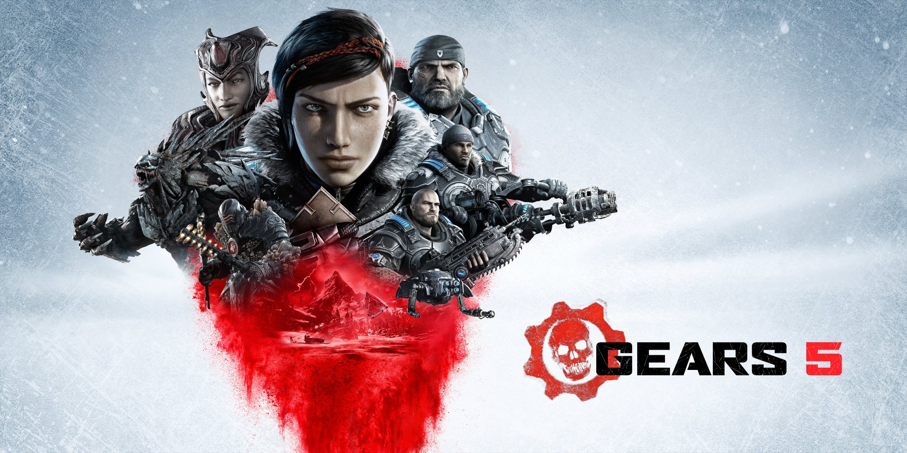
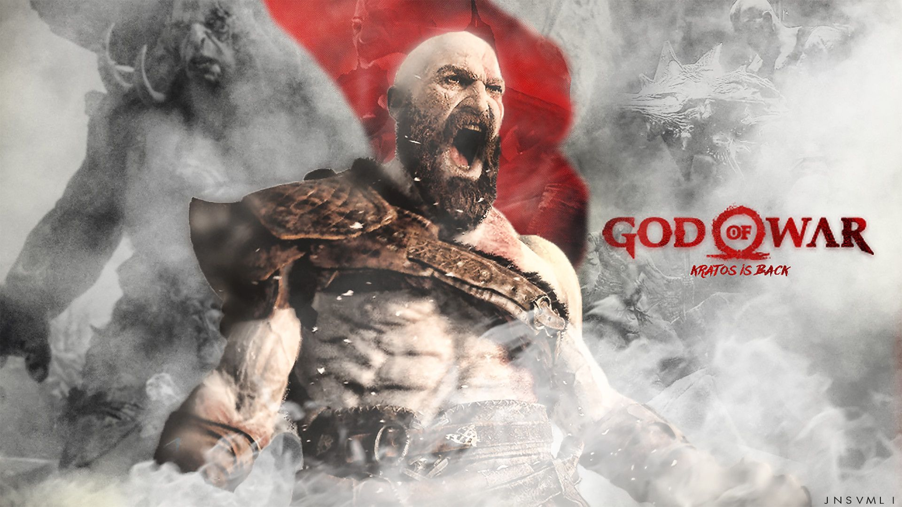
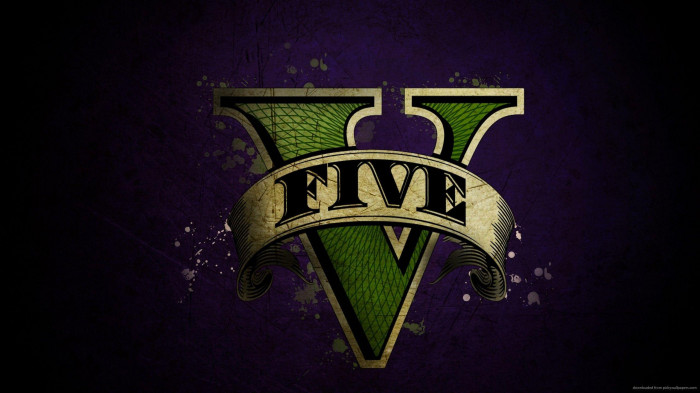

Fall Guys es un party royale gratis y multiplataforma donde los jugadores compiten en delirantes carreras de obstáculos formadas por rondas cada vez más emocionantes hasta que una sola persona se alza con la victoria.Lánzate y esquiva hasta alcanzar la victoria en el panteón de la torpeza. ¿Novato o profesional? ¿Solo o en grupo? Fall Guys ofrece diversión en dosis concentradas y en constante evolución. Lo único más importante que ganar es hacerlo con la pinta más ridícula posible, así que ponte el disfraz más tonto que tengas porque esto está a punto de empezar.
FIFA 23
EA SPORTS™ FIFA 23 lleva El Juego de Todos al campo con los torneos de la Copa Mundial de la FIFA™ masculina y femenina, la incorporación de clubes femeninos y nuevas formas de jugar tus modos favoritos. Los avances en la tecnología HyperMotion2 proporcionan aún más acción y realismo al campo de juego en PS5. Gracias al doble de captura de movimientos reales, ahora hay más animación de fútbol que nunca en cada partido.s
Gears of War V
Gears of War 5 es la quinta entrega de la saga de acción y disparos de The Coalition y Xbox Game Studios para PC y Xbox One. La dependencia que tienen los seres humanos en la tecnología se ha convertido en su perdición y los enemigos se unen para destruir todos los supervivientes. Como Kait, viaja al pasado para revelar los orígenes de los Locust y lucha con tu equipo para proteger lo que haya quedado.

God of War 4
God of War 4, el retorno de un dios por la puerta grandeEl videojuego se centra en la historia de la mitología nórdica, a diferencia de los títulos anteriores, que se ubicaban en la Antigua Grecia y su mitología. Con el cambio de cultura, hacen su aparición espacios míticos como el árbol de Yggdrasil y criaturas como la serpiente Jörmungandr.God of War 4, el retorno de un dios por la puerta grande. Pese a ello, se echa en falta la posibilidad de luchar contra dioses de la mitología nórdica que se nombran en la trama --en juegos anteriores, los dioses se cruza en el camino de Kratos--. Quizás los desarrolladores han guardado esta opción para poder mostrarla en futuras ediciones. Por pedir, que no quede.

GTA V
GTA V se ambienta en Los Santos, ciudad ficticia basada en Los Angeles. En cuanto a GTA Online, el multijugador permite hasta 30 jugadores en línea para explorar el mapeado del juego y disputar distintas misiones de forma cooperativa y/o competitiva, además de celebrarse diferentes eventos para mantener la comunidad de GTA V activa. Actualmente, se rumorea que el juego podría tener un DLC de historia (una expansión argumental) protagonizada por un nuevo personaje, aunque de momento Rockstar no se ha pronunciado.

Rocket League
El juego se asemeja al fútbol, pero utilizando vehículos en lugar de jugadores y una pelota de gran tamaño. En los partidos pueden participar desde 1 vs 1 hasta 3 vs 3 en modo competitivo, en modo informal se puede hasta 4 vs 4 jugadores distribuidos en dos equipos, naranja y azul o rojo y gris cuando es 2 vs 2 equipo contra equipo. Cada vehículo puede utilizar propulsión extra, tanto para acelerar como para desplazarse por el aire, siendo esta una característica fundamental del juego. Dicha propulsión puede recargarse mediante dots distribuidos en el campo de juego y que reaparecen continuamente. Los partidos duran 5 minutos, disputándose un tiempo extra indefinido en caso de empate.
Watch Dogs 2
Dejamos atrás Chicago, dejamos atrás a Aiden Pierce, y la acción se traslada a San Francisco donde la infección del ctOS y blume está en pleno pico y donde la guerra entre justicieros hacktivistas y las organizaciones más poderosas es tangible. Controlando al joven Marcus Holloway, una perspectiva completamente distinta a la que habíamos visto con Aiden, formaremos una alianza con los miembros de Dedsec un grupo de hackers activistas en contra de todo lo que el ctOS y blume está haciendo con la ciudad y con el mundo. Cuando decimos lo de un cambio de perspectiva total lo decimos en serio, Watch Dogs 2 no nos introduce en el drama que podíamos ver en el primer juego, en ese sentido la secuela nos muestra un universo más despreocupado, joven y hasta divertido, una apuesta interesante que sin duda le sienta muy bien al título y que le aporta una narrativa y un guión espectacular.